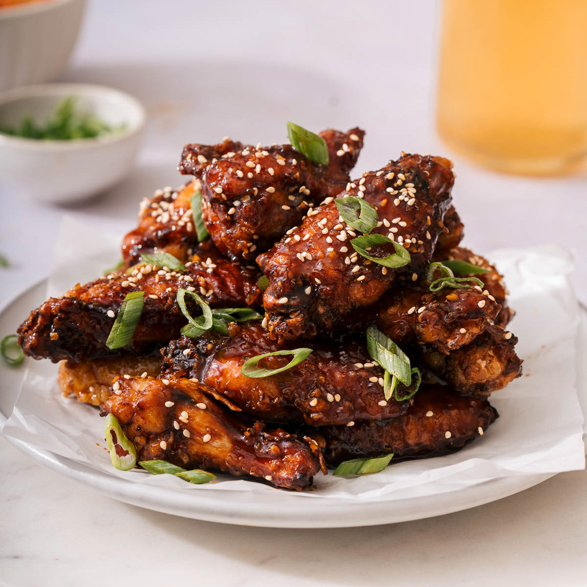

Soy Garlic Chicken

Description
Dakgangjeong (닭강정) is a version of Korean fried chicken.
Some people make dakgangjeong with chicken drumsticks or wings,
but we prefer boneless chicken bites as it's so much easier to eat.
Small chicken nuggets (or popcorn chicken) are deep fried and coated with
sticky delicious sauce.
Dakgangjeong sauce can be prepared either a sweet
and spicy way, similar to Korean fried chicken sauce or a sweet and savory
way using soy sauce, honey and garlic. I have already shared the sweet and
spicy version in the past, so be sure to check that one out as well.
Ingredients
- 1/4 cups soy sauce
- 2 Tbsp brown sugar
- 2 Tbsp honey
- 2 Tbsp water
- 2 Tbsp rice wine
- 1/2 Tbsp minced ginger
- 1/2 Tbsp minced garlic
- A few cracks ground black pepper
- 3 dried chilies (optional)
- 2 green onions (optional), white part
Steps
- In a large bowl, place the chopped chicken and add rice wine, onion powder, garlic powder, salt, ginger powder, and ground black pepper. Combine them well. Set aside.
- Place the corn starch in a large bowl. Dredge the seasoned chicken pieces in the corn starch and evenly coat them.
- In a deep saucepan (or fryer) add a generous amount of oil and heat it until the oil temperature reaches 175 C / 347 F. Start adding the chicken carefully and fry them until they cook. (It takes 4 to 5 mins depending on the size of chicken). Do not overcrowd the pan, and cook in batches if needed. (It might be useful to use a grease splatter screen if you have one as it minimises oil splatter.)
- Take out the cooked chicken and place them onto some kitchen paper to soak up excess oil. Quickly scoop out any floating debris from the oil using a skimmer. Deep fry the chicken again when the oil temperature reaches 175 C / 347 F. Fry them until the batter is golden and crisp. (The second time frying is shorter than the first time, 2 to 3 mins.) Set aside.
- In a separate pan, combine all the sauce ingredients. Bring it to boil over medium low heat while stirring often. Once the sauce starts bubbling, take out the chilies and green onion pieces. In a separate bowl, combine and mix the slurry ingredients then pour it over the sauce. Stir often. Once the sauce thickens or turns to glaze (within 1 - 2 mins), remove from the heat and cool down for 5 mins.
- Place the double fried chicken onto the lined baking sheet, then using a cooking brush, gently baste the chicken with the sauce. Once all the chicken is coated with the sauce, garnish with sesame seeds and green onions. Serve.